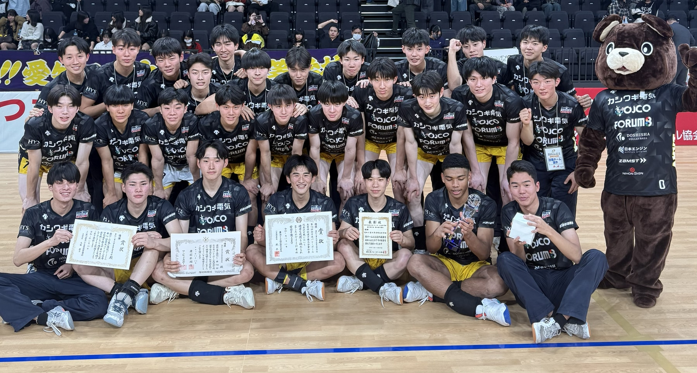
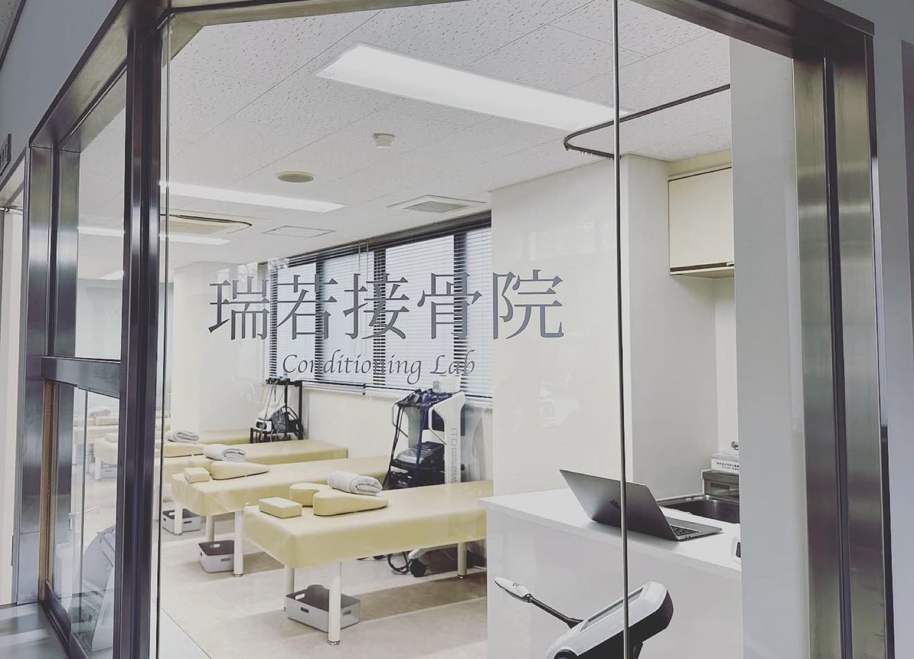
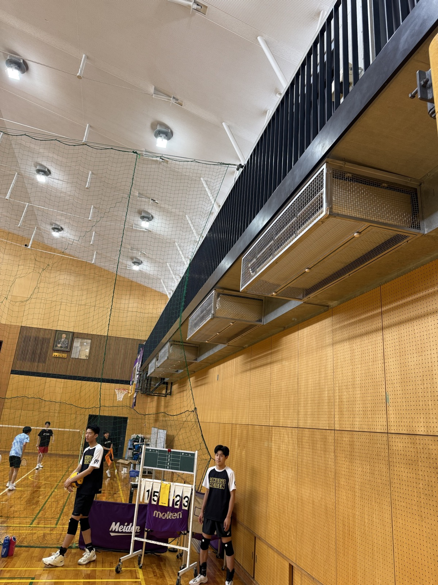
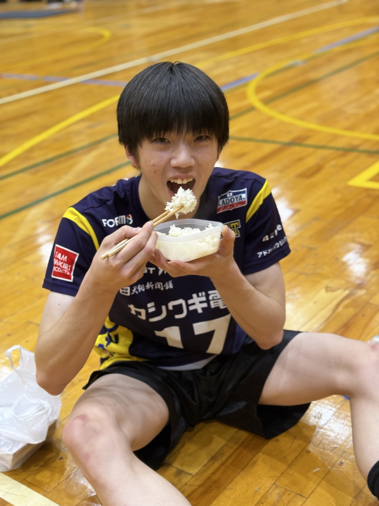
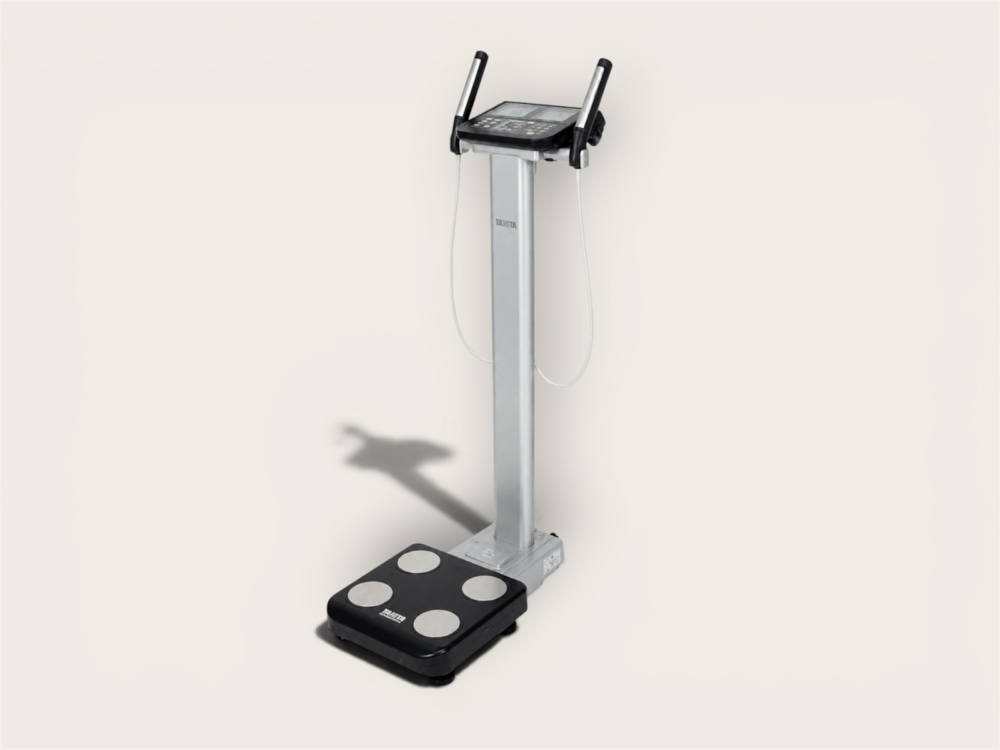

01
競技と学びを、文武両道
同じ熱量で。
競技だけに時間を使えば、短期的には成果が出るかもしれません。
しかし、バレーボールを引退した後も人生は続きます。
愛工大名電は、競技力と学力のどちらかを選ぶのではなく、その両方に挑戦することで将来の選択肢を広げることを大切にしています。
Team Philosophy
競技力だけではない、学力、人間力、進路、組織力。
高校3年間を総合的に設計し、持続可能な強化モデルを追求します。

Philosophy
勝利を目指す過程そのものを、人として成長する時間に変えていきます。
競技だけに時間を使えば、短期的には成果が出るかもしれません。
しかし、バレーボールを引退した後も人生は続きます。
愛工大名電は、競技力と学力のどちらかを選ぶのではなく、その両方に挑戦することで将来の選択肢を広げることを大切にしています。
試合のコートに立ったとき、最後に判断するのは監督ではなく選手自身です。
だからこそ私たちは、練習・学習・生活のすべてにおいて、自分で考え、選び、行動する力を育てます。
主体性は、競技だけでなく社会に出てからも必要となる力だと考えています。
勝利は目標ですが、目的ではありません。
私たちが目指しているのは、競技力だけではなく、人間力、学力、進路まで含めた総合的な成長です。
高校3年間でどれだけ人として成長できたか。その積み重ねが結果として勝利につながると考えています。
強いチームをつくることよりも、強いチームを長く続けることの方が難しい。
愛工大名電は、高校プロ監督制や分業体制を通して、一人の指導者や一世代の選手に依存しない仕組みづくりに挑戦しています。
受け継がれる文化と基準こそが、チームの本当の強さだと考えています。
Transformation
伝統を守るだけでなく、時代に合わせて進化し続けています。
バレーボール中心の環境で全国制覇を目指した時代。だが、保護者の経済的負担や進路の選択肢など、競技力だけでは解決できない課題もあった。
スポーツコースのみで編成されていたチームを見直し、普通コース・特進選抜コースの生徒による体制へ。競技力だけでなく学業も重視する文武両道への転換を進めた。
企業の支援による活動支援募金制度を整備。遠征費や合宿費などの保護者負担軽減を進め、2025年度は年間遠征費0円を実現した。
2026年より高校プロ監督制を導入。監督は指導に専念し、GMは学業・進路・生活指導を担当。役割を明確に分けることで、選手を多面的に支える体制を構築した。
Three-Year Development
高校3年間を通じて、競技力だけでなく学力、人間力、進路まで段階的に育てます。
基礎技術
生活習慣
学習習慣
競技力向上
主体性育成
進路準備
進路実現
リーダーシップ
全国挑戦
DAILY FACILITIES
競技力の向上は、日々の積み重ねから生まれます。愛工大名電男子バレーボール部では、練習だけでなく、身体づくりやコンディション管理まで含めて、選手が成長できる環境づくりを大切にしています。

学校敷地内に接骨院があり、日々のコンディション管理や怪我への対応を相談できる環境があります。
競技を続けるうえで避けられない身体の不調や怪我に対して、早期対応と適切なケアを受けられることも安心材料の一つです。

練習は冷暖房を完備した体育館で実施しています。
夏の猛暑や冬の寒さによる負担を軽減し、一年を通して集中して練習に取り組める環境を整えています。快適な環境は安全面だけでなく、練習の質の向上にもつながっています。

身体づくりも競技力向上の大切な要素です。
練習後にはご飯やプロテインを活用しながら、成長期に必要な栄養補給を習慣化しています。競技だけでなく、食事への意識を高めることも大切にしています。

部内には体組成計を設置しており、選手は自由に測定することができます。
筋肉量や体脂肪率などを数値で確認することで、自分自身の身体と向き合いながら成長を実感できます。感覚だけではなく、データを活用した身体づくりにも取り組んでいます。